Director accounts¶
Finding the “Director” account for your library¶
- Log into Koha with your library’s tech or circ account and do a checkout search for “Director”
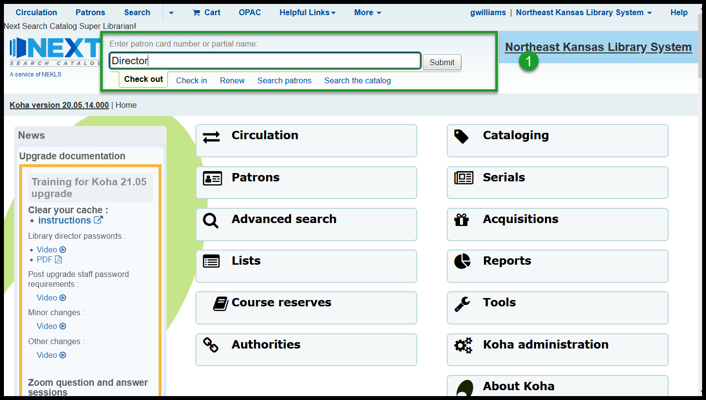
- Find your library’s director account in the list of accounts
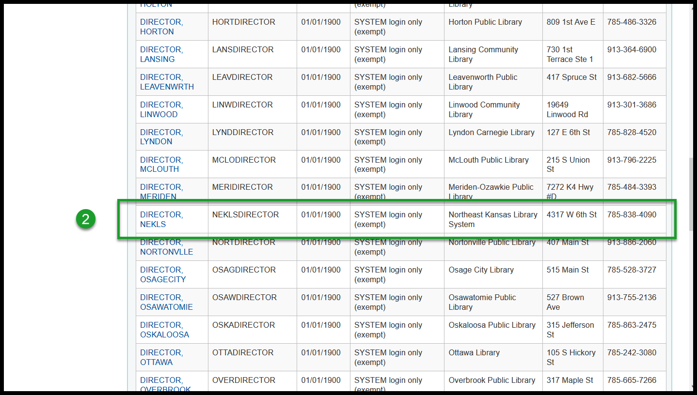
- Go to the details page of the account and note the cardnumber and the e-mail address
- If the e-mail address is incorrect, click on edit and enter the correct e-mail address for your directors
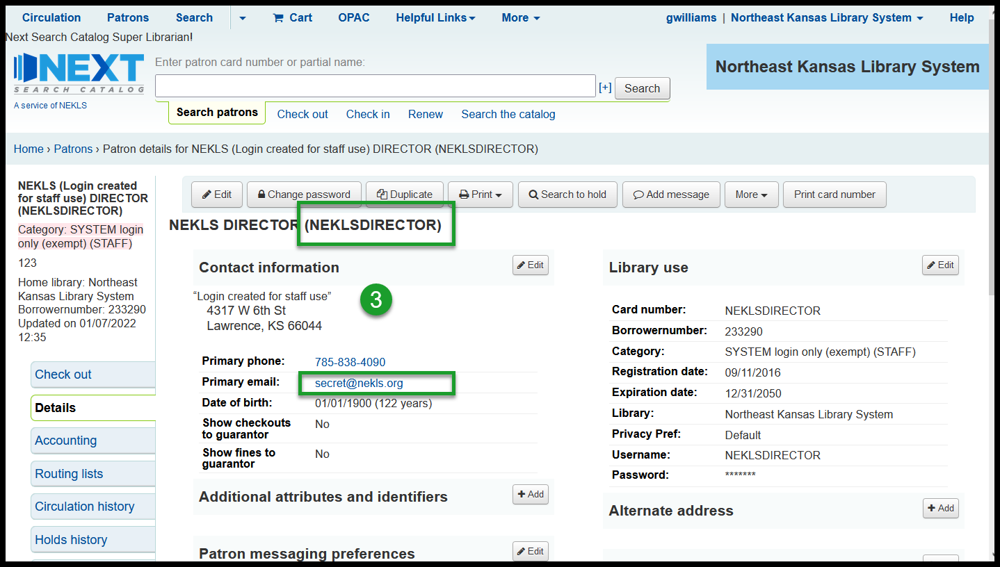
- Go to the OPAC at nextkansas.org and click on “Log into your account”
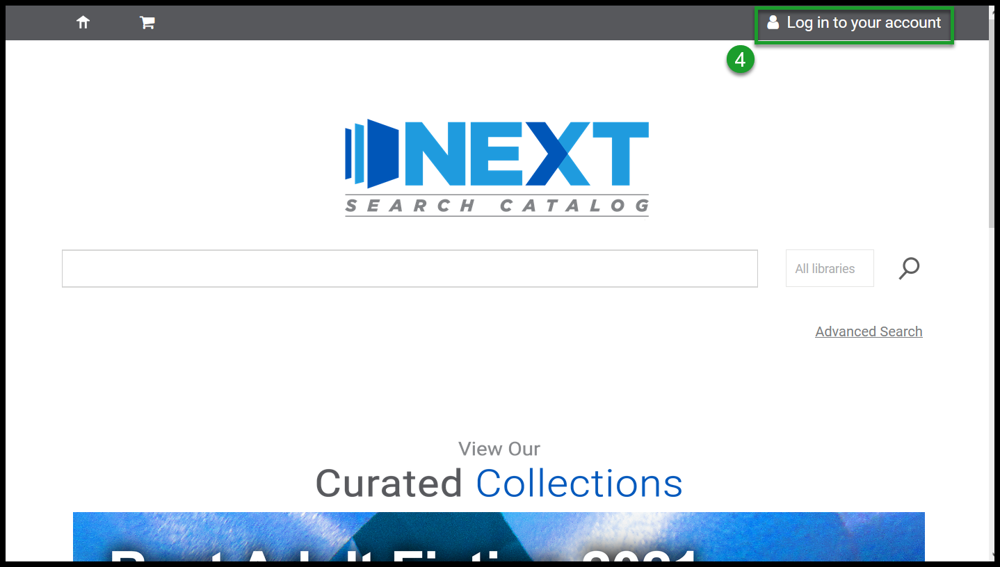
- In the pop-up window, click on “Forgot your password”
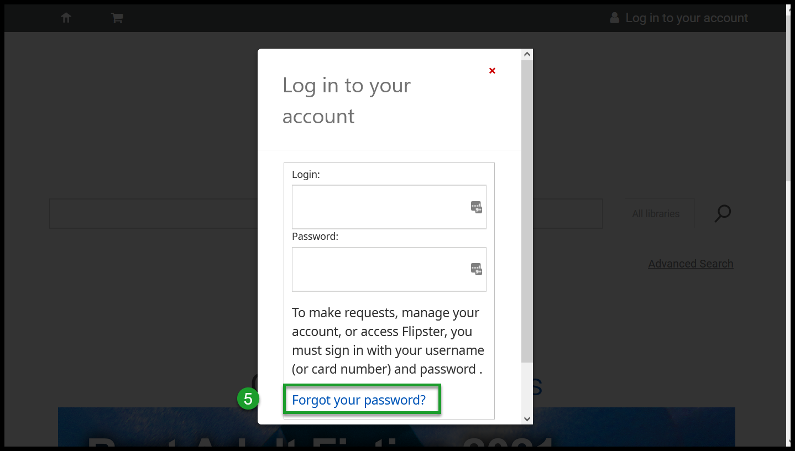
- Enter your card number and your director account’s e-mail address and click “Submit”
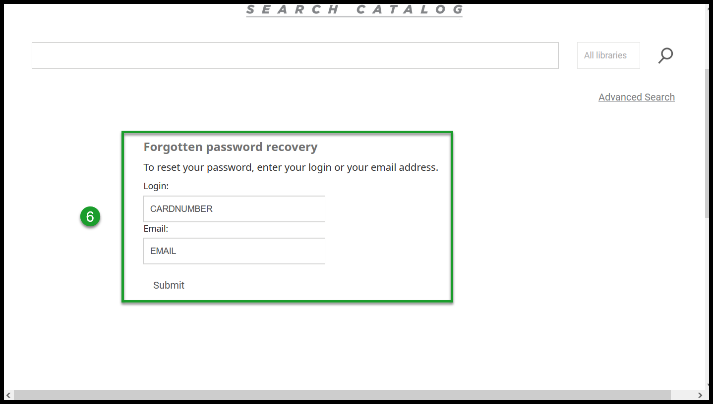
- You should see a page telling you you’re about to receive an e-mail
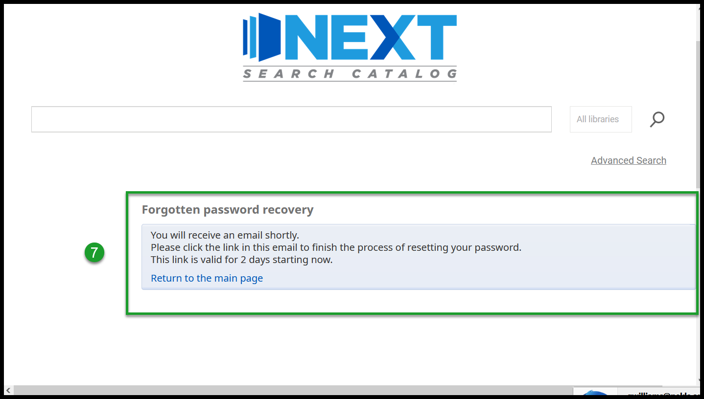
- Open your director account’s e-mail from Next Kansas
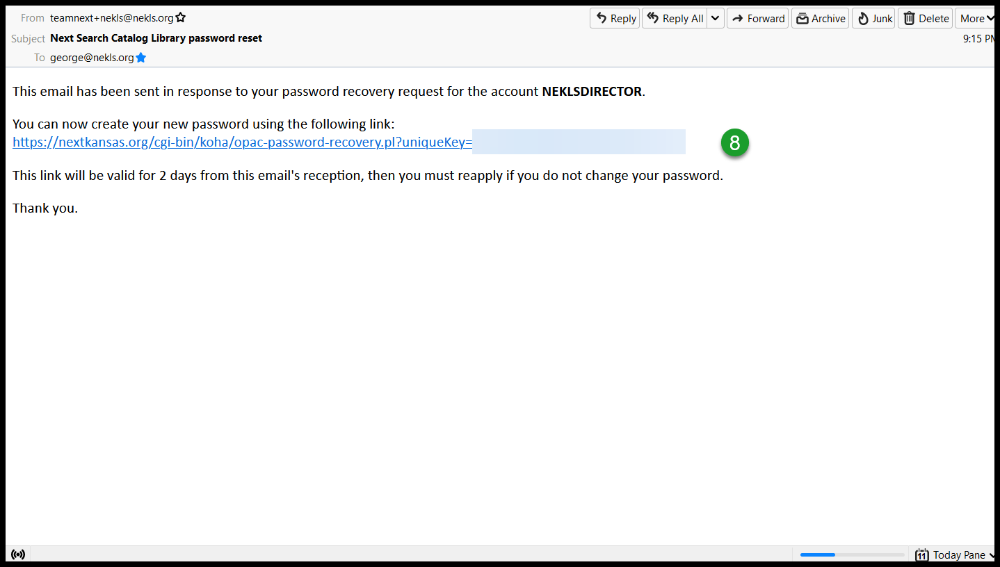
- Enter your new password in the appropriate field and click “Submit”
- After January 16, 2022, staff and library associate accounts will require strong and complex passwords
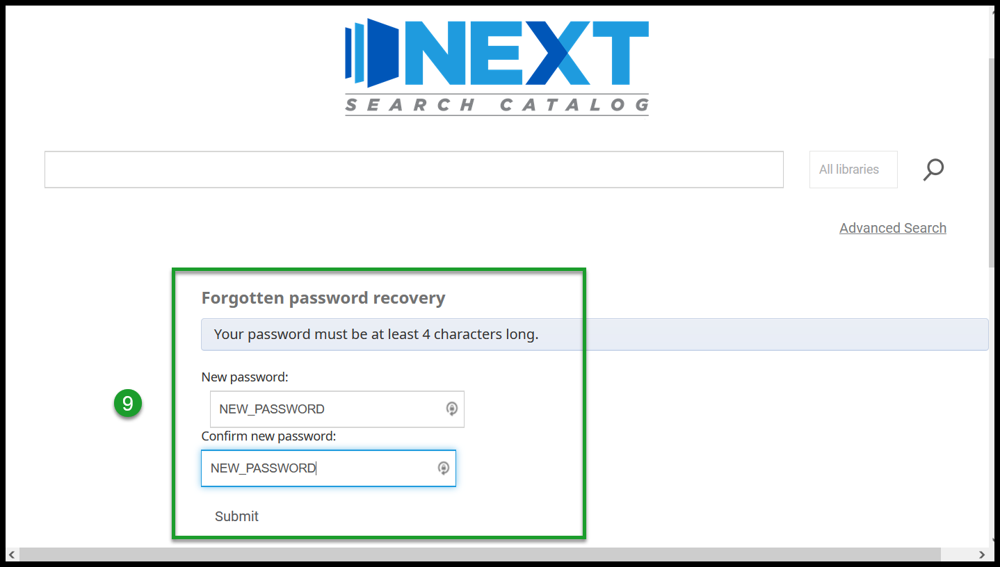
- Log into the staff client with your new password
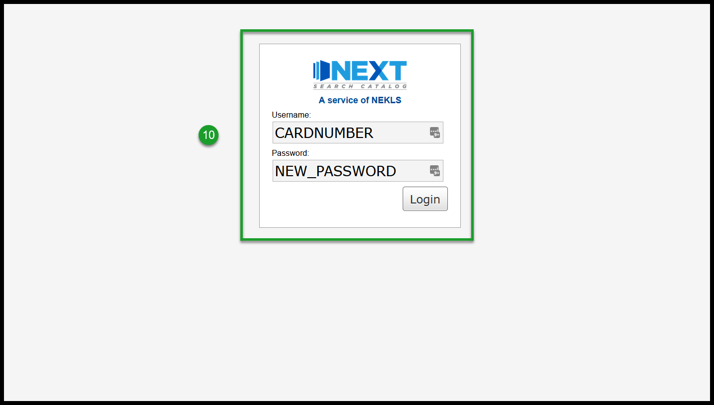
- Success!
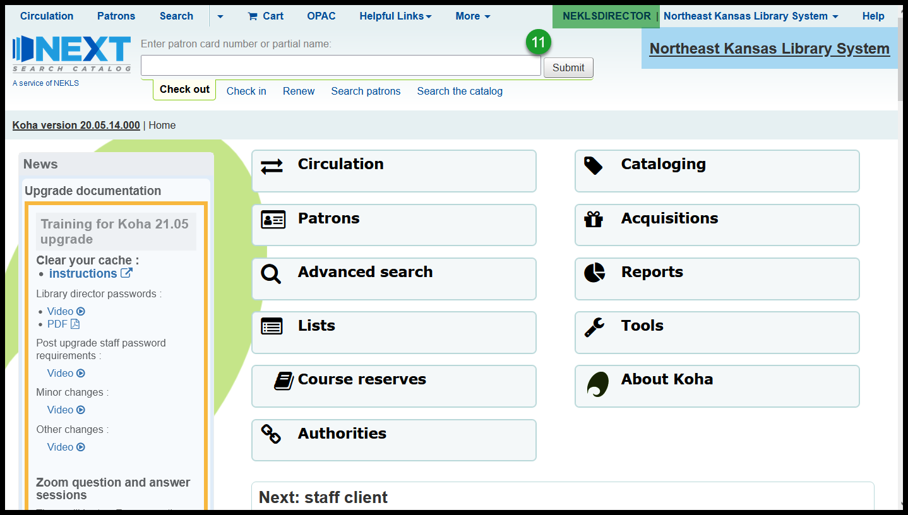